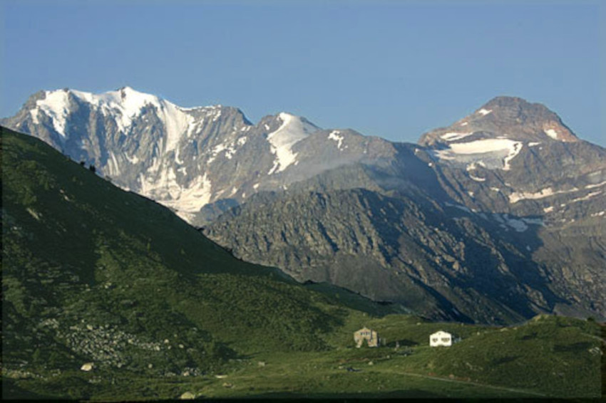

La novela explica la historia de Víctor Frankenstein, un científico que crea un ser
humano de grandes dimensiones y aspecto repulsivo. Al ver la monstruosidad que
ha creado, lo rechaza y huye, pero el monstruo, sintiendo el rechazo de la
humanidad, busca venganza. Después de diversos acontecimientos trágicos,
como el asesinato de su hermano y la ejecución de una criada inocente, el
monstruo exige que Víctor cree una compañera para él. Víctor accede, pero se
arrepiente y destruye su creación. El monstruo, enfurecido, asesina a amigos y
familiares de Víctor.
Desesperado, Víctor persigue al monstruo hasta el Polo Norte, donde relata su
historia al capitán Robert Walton antes de morir. La criatura, consumida por el
remordimiento, promete poner fin a su vida, diciendo que su existencia ya no tiene
sentido. La historia se narra a través de las cartas de Walton a su hermana, el
relato de Víctor y, finalmente, el diario de Walton.
Frankestein es un icono de la cultura popular, especialmente en el cine.
Víctor Frankenstein (2015), dirigida por Paul McGuigan | Tráiler
oficial subtitulado
El último hombre (1826)
El último hombre es una novela posapocalíptica, publicada en 1826.
La historia se sitúa en el futuro, a finales del siglo XXI, y sigue la vida de Lionel
Verney, el último hombre superviviente de una plaga devastadora que arrasa la
humanidad. A lo largo de tres volúmenes, Shelley narra la vida de Verney y la de
sus amigos, explorando su amores, traiciones, luchas políticas y las
consecuencias de un desastre global.
La trama está marcada por la presencia de una plaga mortal que extermina la
mayor parte de la población mundial, y deja a los supervivientes luchando no
únicamente contra la enfermedad, sino también contra la desesperación y el vacío
existencial. A través de sus personajes, Shelley examina la fragilidad de la vida
humana, las luchas por el poder y las emociones que permaneces incluso cuando
la sociedad se desintegra. La novela también trata temas de amor no
correspondido, sacrificio y lucha por la supervivencia, mientras los pocos
personajes restantes intentan encontrar sentido en un mundo que ya no parece
tener propósito.
Lodore (1835)
Esta es la penúltima novela escrita por la autora romántica Mary Shelley, acabada
el 1833 y publicada el 1835.
La historia central relata la vida de la esposa y la hija del personaje que da título a
la obra, Lord Lodore, que es asesinado en un duelo, dejando un camino de
obstáculos legales, financieros y familiares para que las dos heroínas los
resuelvan. Mary Shelley ubica a los personajes femeninos en el centro de la
narrativa: la hija de Lodore, Ethel, crece siendo demasiado dependiente del control
paterno; la esposa, Cornelia, se preocupa demasiado por las normas y las
apariencias de la sociedad aristocrática; y la intelectual e independiente Fanny
Derham, el contraste entre ambas.
Según el punto de vista de la crítica Betty T. Bennett, la novela propone
paradigmas educativos iguales para los hombres y para las mujeres, los
cuales que establecerían la justicia social además de proveer de la ayuda
espiritual e intelectual que ayuda a enfrentar los desafíos que la vida tiene
invariablemente.
Historia de una excursión de seis semanas (1817)
Historia de una excursión de seis semanas es un libro de viajes escrito por Mary
Shelley y Percy Bysshe Shelley, su marido. Publicado en 1817, describe dos viajes
de Mary, Percy y la hermanastra de Mary, Claire Clairmont: uno a través de
Europa en 1814, otro por el lago de Ginebra en 1816. Dividido en tres secciones,
el texto consta de un diario, cuatro cartas, y el poema de Percy Shelley Mont
Blanc. Excluyendo el poema, el texto fue principalmente escrito y organizado por
Mary Shelley. En 1840 revisó el diario y las cartas, volviendo a publicarlos en una
colección de las obras de Percy Shelley.
Parte del nuevo género de la narrativa de viajes del romanticismo, la historia
desborda espontaneidad y entusiasmo y los autores demuestran el deseo de
distinguirse a ellos mismos de los que les rodean
Caminatas en Alemania e Italia, en 1840, 1842, y 1843 (1844)
Caminatas en Alemania e Italia, en 1840, 1842, y 1843 es el libro que narra los
viajes que hicieron por Europa Mary Shelley y su hijo, Percy Florence Shelley, y
diversos de sus amigos de la universidad.
Mary Shelley había vivido en Italia con su marido, Percy Bysshe Shelley, entre el
1818 y el 1823. Para ella, Italia estaba asociada tanto a la felicidad como al duelo:
había escrito muchas obras durante su estancia en el país pero también había
perdido a su marido y a dos de sus hijos. Por lo tanto, aunque estaba ansiosa por
volver, el viaje se vio marcado por la pena. Shelley describe su viaje como un
peregrinaje, que ayudaría a curar su depresión.
Después de desembarcar en Francia, Shelley continúa anticipando felizmente sus
viajes y los beneficios que obtendría. Viajando por Alemania, se queja de la
lentitud del viaje pero se muestra contenta al descubrir que sus recuerdos del Rin
se corresponden con la realidad. Shelley enferma en Alemania y se retira a BadenBaden para recuperarse.
Cuando recuperar la salud y el ánimo, el grupo viaja hacia Italia, donde la invade la nostalgia.
Shelley escribe sobre su felicidad en Italia y su tristeza ante la perspectiva de irse.
A finales de septiembre, no llega el dinero que le posibilitarían volver a Inglaterra,
de manera que Percy Florence y sus amigos vuelven sin ella. Finalmente el dinero
llega, y viaja sola hacia su país. En las cartas donde relata el viaje de vuelta,
describe los paisajes sublimes que recorre, principalmente el Puerto de Simplon y
las cascadas de Suiza.

Fletschhorn visto desde el valle del Simplon | Roland Zumbühl,
CC BY-SA 3.0, vía Wikimedia Commons
El mal de ojo (1829)
El mal de ojo es un relato breve escrito por Mary Shelley y publicado en 1830. El
relato se desarrolla en Grecia y trata de un hombre conocido como Dimitri el del
mal de ojo. La esposa de Dimitri fue asesinada y su hija secuestrada muchos años
de empezar la historia. Durante mucho tiempo la buscó; pero acabó dándose por
vencido al recibir terribles heridas que lo dejaron desfigurado.
Su apariencia y su carácter brutal llevaron a la creencia que era portador del mal
de ojo.
Más adelante, un amigo de Dimitri, Katusthius Ziani, lo reclutará para que le ayude
a recuperar su legítima herencia y, durante el viaje para conseguirlo, secuestrarán
a un niño que, finalmente, Dimitri descubrirá que es su nieto: el hijo de su hija
secuestrada.
Transformación (1831)
Transformación es una obra escrita en 1830. El narrador, Guido, explica su propia
historia. Genovés del siglo XV, comprometido con Julieta, la hija de un amigo de
su padre, marcha a París antes de casarse donde dilapida su fortuna. Al volver a
Génova el padre de Julieta le comunica que por su irresponsabilidad financiera se
debe anular el compromiso con Julieta; a pesar de ello, el padre de Julieta le
ofrece una fortuna a cambio de aceptar su control; Guido lo rechaza y, después de
un intento de raptar a Julieta, es desterrado de la ciudad.
Desesperado, sin dinero, vaga por la playa y ve como un barco se hunde. Un ser
extraño aparece flotando sobre un cofre; Guido explica su historia a la criatura que
le ofrece un trato: durante tres días se intercambiarán los cuerpos a cambio de su
cofre lleno de tesoros. Guido acepta. Espera durante tres días, pero la criatura no
vuelve por lo que decide ir a buscarlo a Génova.
Allá descubre que la criatura, que ahora tiene su cuerpo, había aceptado la fortuna
y estaba a punto de casarse con Julieta. Lucha con la criatura que resulta
mortalmente herida; Guido despierta nuevamente en su propio cuerpo; se casará
con Julieta, pero no podrá olvidar la extraña experiencia y su recuerdo le
perseguirá para siempre.
Fuente: elaborado a partir del artículo de la Wikipedia Mary Shelley bibliography